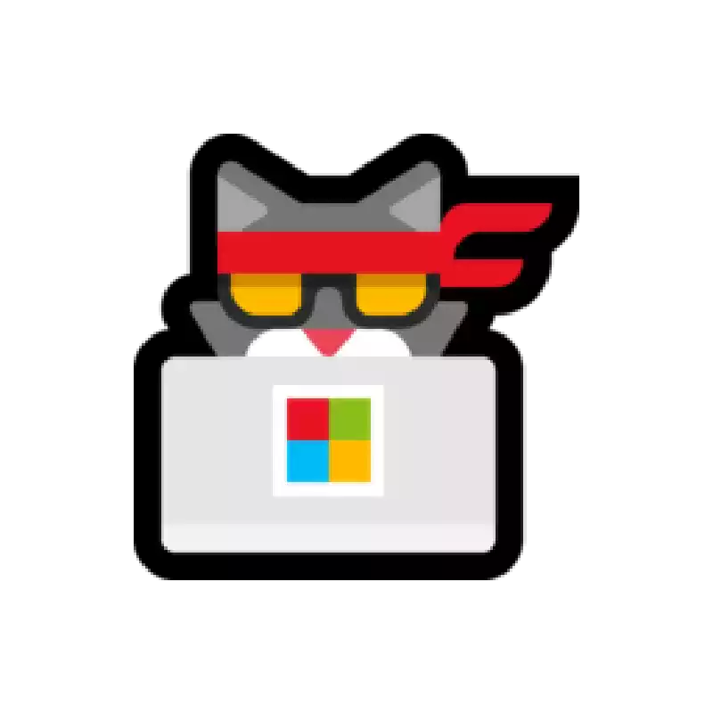
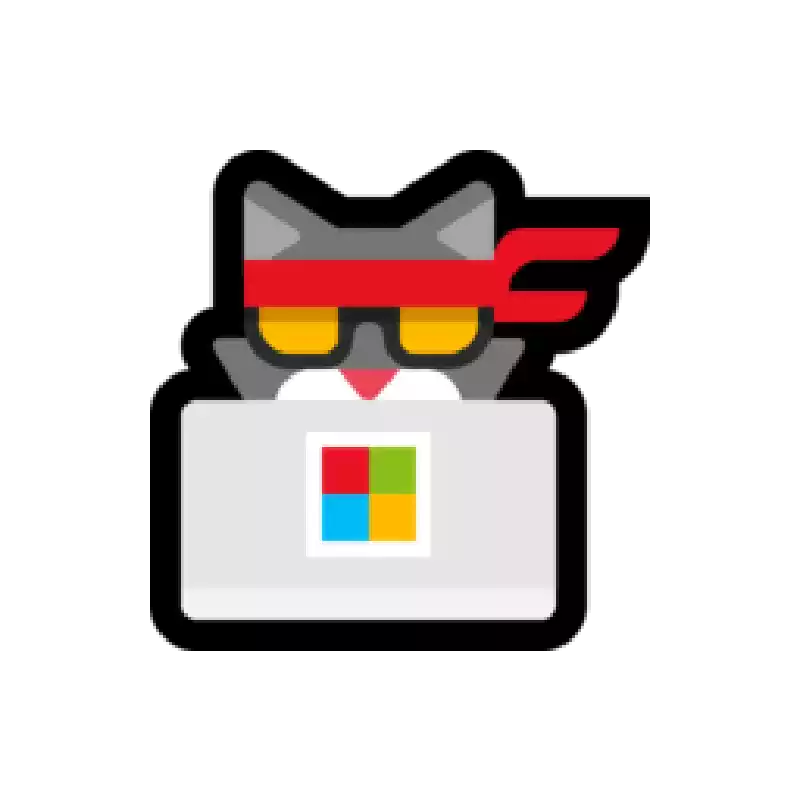

Sorry we don't have this page
click on the icon below to get back to the main page
نأسف لكن هذه الصفحة لا توجد لدينا
اضغط علي الأيقونة بالأسفل للرجوع للصفحة الرئيسية
click on the icon below to get back to the main page
اضغط علي الأيقونة بالأسفل للرجوع للصفحة الرئيسية
